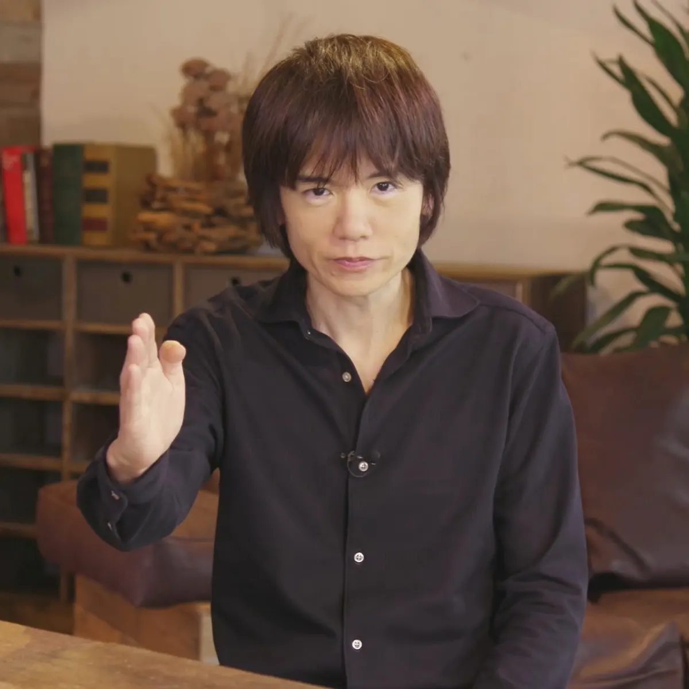

Gameplay/Système de jeu
Pour gagner dans Smash Bros, il faut éjecter son adversaire du terrain. Pour cela,
il faut frapper à répétition son adversaire afin de faire monter sa jauge de pourcentage de dégâts.
Plus elle est élevée, plus les coups portés le feront voler loin et l'expulseront de l'écran.


Cette particularité du système de combat rend la série Super Smash Bros. unique en son genre dans le sens où elle allie l'aspect classique des jeux de combats, consistant à enchaîner des coups en appuyant sur des combinaisons de touches, à la mobilité d'un jeu de plateforme, puisque les personnages doivent constamment se déplacer au sein de différentes plateformes constituants les arènes et effectuer des sauts pour tenter de revenir sur l’arène duquel ils auraient été éjectés.
Les coups sont également donnés de manière assez novatrice pour un jeu de combat puisqu'ils dépendent de la direction dans laquelle le joueur oriente le stick directionnel au moment où il donne le coup. Deux types d'attaques se distinguent également : les coups normaux et les coups spéciaux. Les coups spéciaux diffèrent d'un personnage à un autre. Les attaques Smash sont quant à elles des coups normaux à la puissance amplifiée et pouvant être chargées qui sont effectuées en pressant simultanément le bouton d'attaque et le stick directionnel dans la direction voulue.
Par ailleurs, divers objets apparaissent dans l'arène pour être ramassés et ainsi faire diminuer son propre pourcentage de dégâts (soins) ou au contraire infliger des dégâts à l'adversaire (armes, pièges, etc).

Il existe également un coup spécial unique à chaque personnage, le Smash final. Lors de ce coup, l'adversaire est pris dans une animation et subit de lourds dégâts. Ce coup est obtenable de deux manières différentes : soit par la balle Smash en lui assimilant des coups, soit par la jauge de chargement du Smash final.

Intérêt
L'un des intérêts de la série réside dans le fait que les combattants sont issus de différents titres parmi les plus célèbres de Nintendo, tels que Mario, Link, Samus, Pikachu ou encore Mr. Game & Watch. De plus, depuis Super Smash Bros. Brawl, des personnages issus d'autres compagnies de jeux vidéo sont amenés à faire partie des personnages jouables en tant qu'invités. Sonic et Snake, tous deux issus des franchises de Sega et Konami, ont été les premiers personnages de ce type introduits dans la série. D'autres personnages, comme Créa-Main, qui a l'apparence d'un gant blanc pour la main droite qui flotte dans les airs et fait office de boss, ont été conçus spécialement pour la série. Enfin, la galerie des trophées à compléter au sein de chaque jeu constitue à elle seule une véritable encyclopédie de Nintendo racontant l'histoire des séries développées et éditées par la firme.
Auteur et Développeur de la série
- Nom & Prénom : Masahiro Sakurai
- Naissance : 3 août 1970 (Tokyo)
- Nom dans la langue maternelle : 桜井 政博
- Nationalité : Japonais
- Activités : Scénariste, seiyū, informaticien, producteur de jeu vidéo